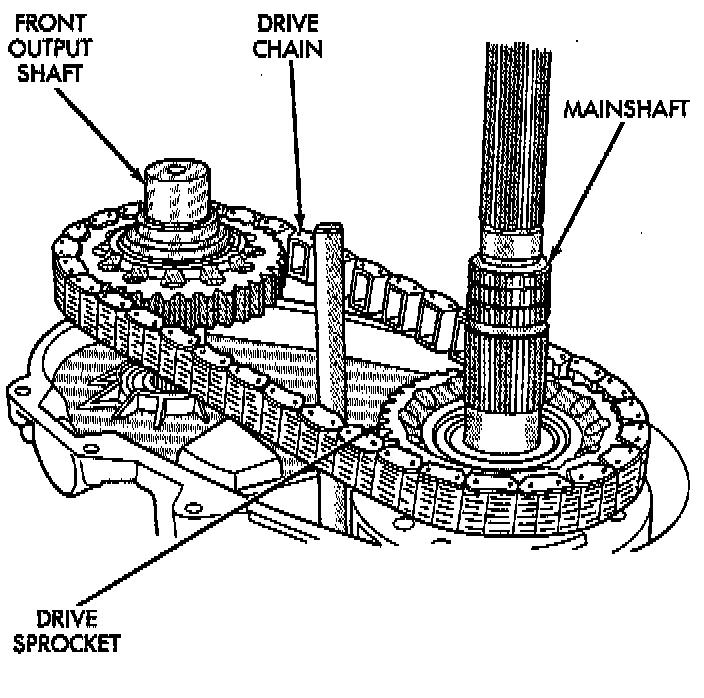
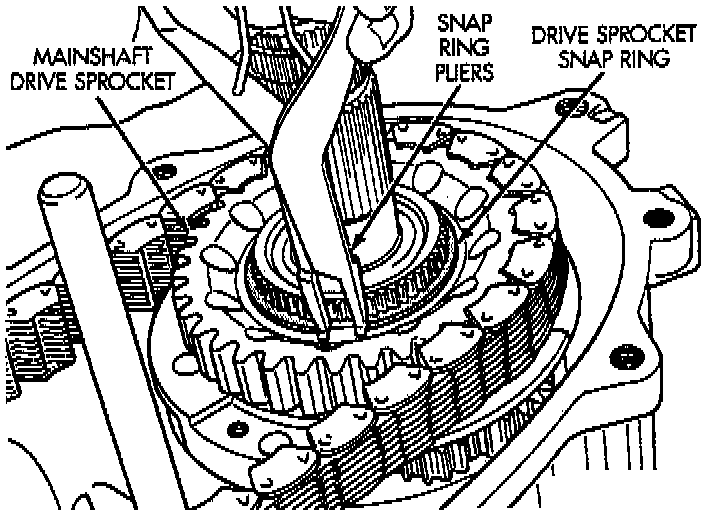
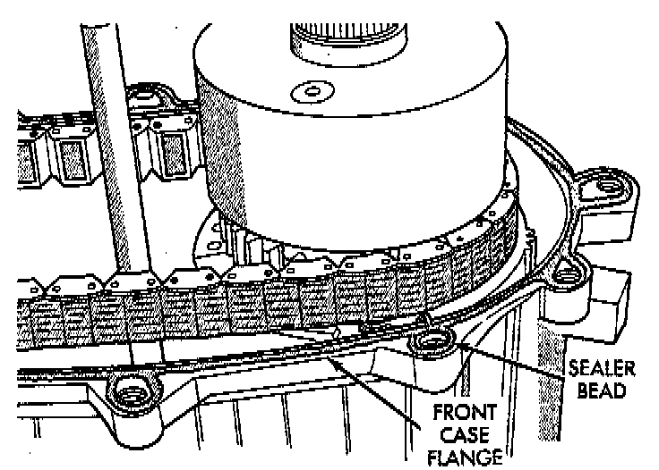
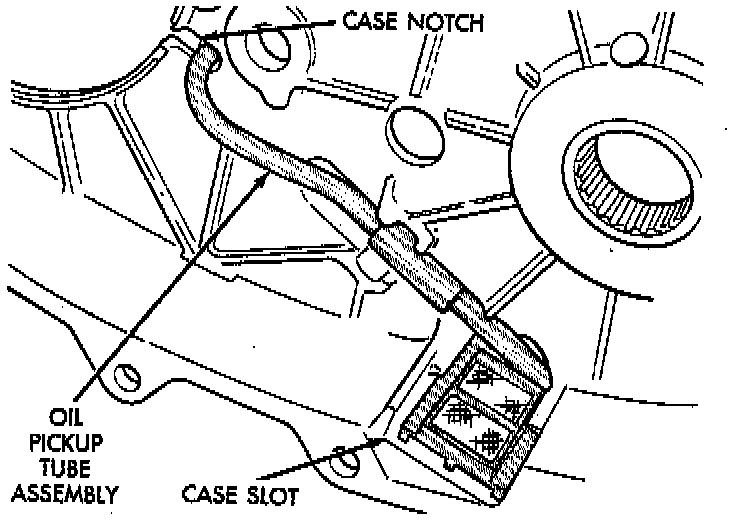
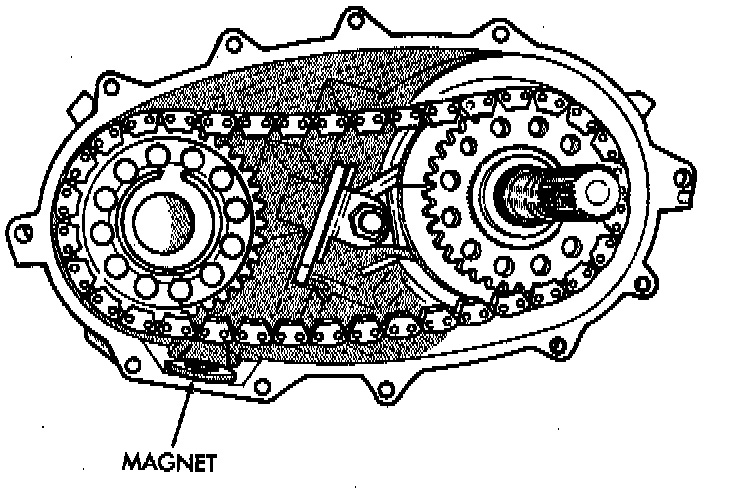
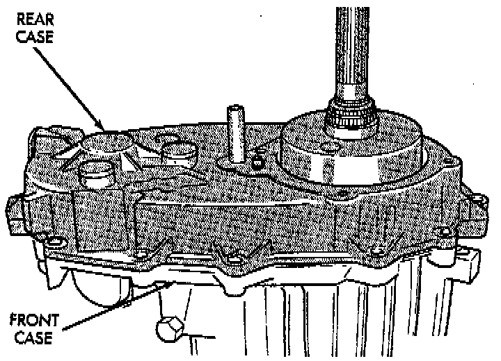
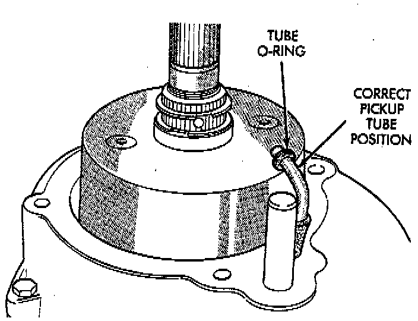
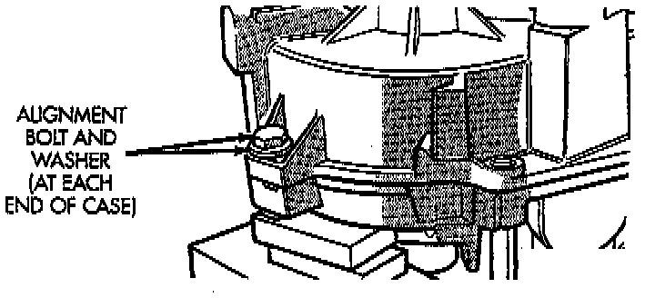

Front Output Shaft and Drive Chain Installation
1. Lubricate front output shaft-sprocket assembly, drive chain and drive sprocket with transmission fluid.
2. Assemble drive chain, drive sprocket and front output shaft.
3. Start drive sprocket on mainshaft.
4. Guide front shaft into bearing and drive sprocket onto mainshaft drive gear.

5. Install drive sprocket snap-ring.
6. Clean sealing flanges of front case and rear case with a wax and grease remover.

7. Apply 3 mm (1/8 inch) wide bead of MOPAR gasket maker or silicone adhesive sealer to mounting flange of front case. Work sealer bead around bolt holes as shown.

8. Install oil pickup tube in rear case. Be sure tube is seated in case notch as shown.

9. Install magnet in front case pocket.

10. Align and install rear case on front case.

11. Verify that oil pickup tube is still seated in case notch and tube end is pointed toward mainshaft.

12. Install case attaching bolts. Alignment bolts at each end of case are only ones requiring washers.
13. Tighten case bolts to 27 - 34 Nm (20 - 25 ft. lbs.) torque.